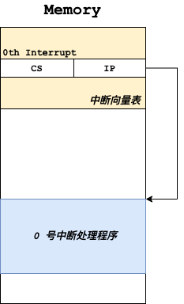
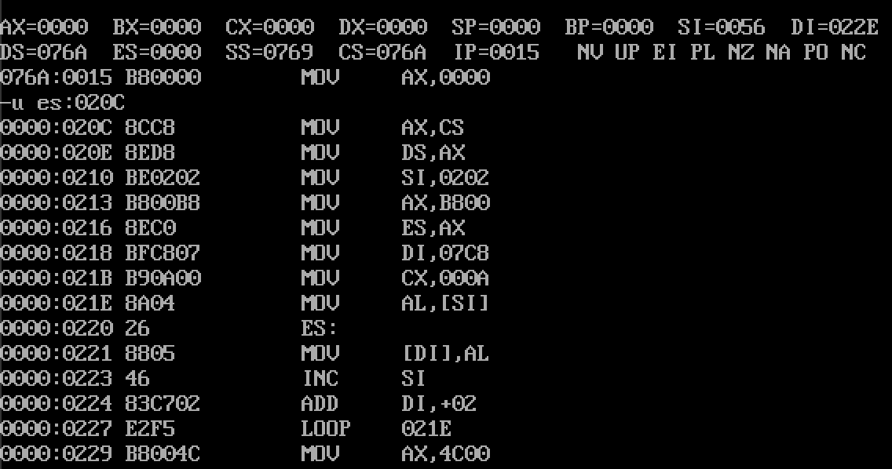

<!DOCTYPE html>
<html lang="cn">
<head>
  <meta charset="UTF-8">
<meta name="viewport" content="width=device-width, initial-scale=1, maximum-scale=2">
<meta name="theme-color" content="#222">
<meta name="generator" content="Hexo 5.3.0">
  <link rel="apple-touch-icon" sizes="180x180" href="/images/apple-touch-icon-next.png">
  <link rel="icon" type="image/png" sizes="32x32" href="/images/favicon-32x32-next.png">
  <link rel="icon" type="image/png" sizes="16x16" href="/images/favicon-16x16-next.png">
  <link rel="mask-icon" href="/images/logo.svg" color="#222">

<link rel="stylesheet" href="/css/main.css">

<link rel="stylesheet" href="https://fonts.loli.net/css?family=Noto Serif SC:300,300italic,400,400italic,700,700italic&display=swap&subset=latin,latin-ext">
<link rel="stylesheet" href="/lib/font-awesome/css/all.min.css">

<script id="hexo-configurations">
    var NexT = window.NexT || {};
    var CONFIG = {"hostname":"www.zobinhuang.com","root":"/","scheme":"Pisces","version":"7.8.0","exturl":false,"sidebar":{"position":"left","width":180,"display":"hide","padding":10,"offset":12,"onmobile":false},"copycode":{"enable":false,"show_result":true,"style":"flat"},"back2top":{"enable":true,"sidebar":true,"scrollpercent":true},"bookmark":{"enable":true,"color":"#FF4136","save":"manual"},"fancybox":false,"mediumzoom":false,"lazyload":false,"pangu":false,"comments":{"style":"tabs","active":null,"storage":true,"lazyload":false,"nav":null},"algolia":{"hits":{"per_page":10},"labels":{"input_placeholder":"Search for Posts","hits_empty":"We didn't find any results for the search: ${query}","hits_stats":"${hits} results found in ${time} ms"}},"localsearch":{"enable":false,"trigger":"auto","top_n_per_article":1,"unescape":false,"preload":false},"motion":{"enable":true,"async":false,"transition":{"post_block":"fadeIn","post_header":"slideDownIn","post_body":"slideDownIn","coll_header":"slideLeftIn","sidebar":"slideUpIn"}}};
  </script>

  <meta name="description" content="img{margin-left: 20px; margin-right: 20px;}     #table th{text-align:center;}     #table td{text-align:center;}     p{margin-left: 15px; margin-right: 15px;}     .div_concurrent_img{padding: 10p">
<meta property="og:type" content="website">
<meta property="og:title" content="内中断">
<meta property="og:url" content="http://www.zobinhuang.com:10082/sec_learning_backup/Tech_OS_And_Linux_Kernel/Assembly_Basic_7_Internal_Interrupt/index.html">
<meta property="og:site_name" content="Zobin">
<meta property="og:description" content="img{margin-left: 20px; margin-right: 20px;}     #table th{text-align:center;}     #table td{text-align:center;}     p{margin-left: 15px; margin-right: 15px;}     .div_concurrent_img{padding: 10p">
<meta property="og:locale">
<meta property="og:image" content="https://i.creativecommons.org/l/by-nc-nd/4.0/88x31.png">
<meta property="og:image" content="http://www.zobinhuang.com:10082/sec_learning_backup/Tech_OS_And_Linux_Kernel/Assembly_Basic_7_Internal_Interrupt/pic/xxx.png">
<meta property="og:image" content="http://www.zobinhuang.com:10082/sec_learning_backup/Tech_OS_And_Linux_Kernel/Assembly_Basic_7_Internal_Interrupt/pic/internal_interrupt.png">
<meta property="og:image" content="http://www.zobinhuang.com:10082/sec_learning_backup/Tech_OS_And_Linux_Kernel/Assembly_Basic_7_Internal_Interrupt/pic/copy_do0.png">
<meta property="article:published_time" content="2022-02-10T14:39:09.789Z">
<meta property="article:modified_time" content="2021-09-07T12:09:29.000Z">
<meta property="article:author" content="Zhuobin Huang">
<meta property="article:tag" content="Zobin">
<meta property="article:tag" content="黄卓彬">
<meta property="article:tag" content="zobinHuang">
<meta property="article:tag" content="网络工程">
<meta property="article:tag" content="Networking Engineering">
<meta name="twitter:card" content="summary">
<meta name="twitter:image" content="https://i.creativecommons.org/l/by-nc-nd/4.0/88x31.png">

<link rel="canonical" href="http://www.zobinhuang.com:10082/sec_learning_backup/Tech_OS_And_Linux_Kernel/Assembly_Basic_7_Internal_Interrupt/">


<script id="page-configurations">
  // https://hexo.io/docs/variables.html
  CONFIG.page = {
    sidebar: "",
    isHome : false,
    isPost : false,
    lang   : 'cn'
  };
</script>

  <title>内中断 | Zobin
</title>
  


  <noscript>
  <style>
  .use-motion .brand,
  .use-motion .menu-item,
  .sidebar-inner,
  .use-motion .post-block,
  .use-motion .pagination,
  .use-motion .comments,
  .use-motion .post-header,
  .use-motion .post-body,
  .use-motion .collection-header { opacity: initial; }

  .use-motion .site-title,
  .use-motion .site-subtitle {
    opacity: initial;
    top: initial;
  }

  .use-motion .logo-line-before i { left: initial; }
  .use-motion .logo-line-after i { right: initial; }
  </style>
</noscript>

<link rel="alternate" href="/atom.xml" title="Zobin" type="application/atom+xml">
</head>

<body itemscope itemtype="http://schema.org/WebPage">
  <div class="container use-motion">
    <div class="headband"></div>

    <header class="header" itemscope itemtype="http://schema.org/WPHeader">
      <div class="header-inner"><div class="site-brand-container">
  <div class="site-nav-toggle">
    <div class="toggle" aria-label="تشغيل شريط التصفح">
      <span class="toggle-line toggle-line-first"></span>
      <span class="toggle-line toggle-line-middle"></span>
      <span class="toggle-line toggle-line-last"></span>
    </div>
  </div>

  <div class="site-meta">

    <a href="/" class="brand" rel="start">
      <span class="logo-line-before"><i></i></span>
      <h1 class="site-title">Zobin</h1>
      <span class="logo-line-after"><i></i></span>
    </a>
      <p class="site-subtitle" itemprop="description">Loves Tech & Tea</p>
  </div>

  <div class="site-nav-right">
    <div class="toggle popup-trigger">
    </div>
  </div>
</div>


<nav class="site-nav">
  <ul id="menu" class="main-menu menu">
        <li class="menu-item menu-item-主页">

    <a href="/" rel="section"><i class="fa fa-home fa-fw"></i>主页</a>

  </li>
        <li class="menu-item menu-item-关于">

    <a href="/sec_about/" rel="section"><i class="fa fa-address-card fa-fw"></i>关于</a>

  </li>
        <li class="menu-item menu-item-科研-(research)">

    <a href="/sec_research/" rel="section"><i class="fa fa-atom fa-fw"></i>科研 (Research)</a>

  </li>
        <li class="menu-item menu-item-项目">

    <a href="/sec_project/" rel="section"><i class="fa fa-user-cog fa-fw"></i>项目</a>

  </li>
        <li class="menu-item menu-item-知识库">

    <a href="/sec_learning/" rel="section"><i class="fa fa-book-open fa-fw"></i>知识库</a>

  </li>
        <li class="menu-item menu-item-每周大盘">

    <a href="/sec_weekly/" rel="section"><i class="fa fa-newspaper fa-fw"></i>每周大盘</a>

  </li>
        <li class="menu-item menu-item-实习与助教">

    <a href="/sec_internship/" rel="section"><i class="fa fa-people-arrows fa-fw"></i>实习与助教</a>

  </li>
        <li class="menu-item menu-item-进度">

    <a href="/sec_schedule/" rel="section"><i class="fa fa-calendar-alt fa-fw"></i>进度</a>

  </li>
        <li class="menu-item menu-item-随笔">

    <a href="/sec_essay/" rel="section"><i class="fa fa-mug-hot fa-fw"></i>随笔</a>

  </li>
        <li class="menu-item menu-item-独立音乐人">

    <a href="/sec_music/" rel="section"><i class="fa fa-music fa-fw"></i>独立音乐人</a>

  </li>
  </ul>
</nav>


</div>
    </header>

    
  <div class="reading-progress-bar"></div>
  <a role="button" class="book-mark-link book-mark-link-fixed"></a>


    <main class="main">
      <div class="main-inner">
        <div class="content-wrap">
          
  
  

          <div class="content page posts-expand">
            

    
    
    
    <div class="post-block" lang="cn">
      <header class="post-header">

<h1 class="post-title" itemprop="name headline">内中断
</h1>

<div class="post-meta">
  
  <ul class="breadcrumb">
          
            <li><a href="/sec_learning_backup/">SEC_LEARNING_BACKUP</a></li>
            <li><a href="/sec_learning_backup/Tech_OS_And_Linux_Kernel/">TECH_OS_AND_LINUX_KERNEL</a></li>
          <li>ASSEMBLY_BASIC_7_INTERNAL_INTERRUPT</li>
        
  </ul>

</div>

</header>

      
      
      
      <div class="post-body">
          <head>
<style>
    img{margin-left: 20px; margin-right: 20px;}
    #table th{text-align:center;}
    #table td{text-align:center;}
    p{margin-left: 15px; margin-right: 15px;}
    .div_concurrent_img{padding: 10px 10px; display: flex; align-items:center; justify-content:center;}
    @media(max-width: 768px) {
      .div_concurrent_img{flex-direction: column;}
    }
    .div_catalogue{padding: 10px 10px; font-size: 16px; background-color: #E0E0E0; word-spacing:0px;  border:1px solid black; border-radius: 10px;}
    .div_licence{font-size: 16px; word-spacing:0px; border:1px solid black;}
    .div_learning_post{font-size: 16px; word-spacing:0px;}
    .div_indicate_source{font-size: 18px; word-spacing:0px; background-color: #E0E0E0;}
    .div_learning_post_boder{padding: 10px 10px; font-size: 16px; word-spacing:0px;  border:1px solid black;}
</style>

<!--支持网页公式显示-->    
<script type="text/javascript" src="https://cdn.mathjax.org/mathjax/latest/MathJax.js?config=AM_HTMLorMML-full"></script>
<!--支持矩阵显示-->
<script type="text/javascript">
  run_maths = function() {
    if (document.querySelector('[class*="cmath"]') !== null) {
      if (typeof (mjax_path)=='undefined') { mjax_path='https://cdn.jsdelivr.net/npm/mathjax@2'; }
      if (typeof (mjax_config)=='undefined') { mjax_config='AM_CHTML'; }
      smjax = document.createElement ('script');
      smjax.setAttribute('src',`${mjax_path}/MathJax.js?config=${mjax_config}`);
      smjax.setAttribute('async',true);
      document.getElementsByTagName('head')[0].appendChild(smjax);
    }
  };
  if (document.readyState === 'loading') {  
    window.addEventListener('DOMContentLoaded', run_maths); 
  } else { 
    run_maths(); 
  }
</script>
</head>

<body>

<div align="center" class="div_indicate_source">
  <h4>⚠ 转载请注明出处：<font color="red"><i>作者：ZobinHuang，更新日期：July 17 2021</i></font></h4>
</div>

<div class="div_licence">
  <br>
  <div align="center">
      <a rel="license noopener" target="_blank" href="http://creativecommons.org/licenses/by-nc-nd/4.0/"></a>
  </div>
  <p>
  &nbsp;&nbsp;&nbsp;&nbsp;本<span xmlns:dct="http://purl.org/dc/terms/" href="http://purl.org/dc/dcmitype/Text" rel="dct:type">作品</span>由 <span xmlns:cc="http://creativecommons.org/ns#" property="cc:attributionName"><b>ZobinHuang</b></span> 采用 <a rel="license noopener" target="_blank" href="http://creativecommons.org/licenses/by-nc-nd/4.0/"><font color="red">知识共享署名-非商业性使用-禁止演绎 4.0 国际许可协议</font></a> 进行许可，在进行使用或分享前请查看权限要求。若发现侵权行为，会采取法律手段维护作者正当合法权益，谢谢配合。
  </p>
</div>

<!--表格-->
<!--
<table border="1" align="center" bgcolor="#FFFFFF">
  <caption>表格</caption>
  <tr>
    <th>A</th>
    <th>B</th>
    <th>C</th>
  </tr>
  <tr>
    <td>xxx</td>
    <td>xxx</td>
    <td>xxx</td>
  </tr>
</table>
-->

<!--矩阵公式-->
<!--
<div class="cmath" align="center">
  `((1, 0),(1, 0))`
</div>
-->

<!--图片-->
<!--
<div align="center">
  
</div>
-->

<!--正文-->
<!--
<p>
&nbsp;&nbsp;&nbsp;&nbsp;公式：<span>`\overline{A}\overline{B}`</span>
</p>
-->

<br>

<div class="div_catalogue">
  <div align="center">
    <h2> 目录 </h2>
    <p>
    <font size="2px">有特定需要的内容直接跳转到相关章节查看即可。</font>
  </div>
  <div class="div_learning_post_boder">
    <p>
    &nbsp;&nbsp;&nbsp;&nbsp;Section 1. <a href="#1_intro"><font color="blue"><b>内中断</b></font></a>：介绍了 CPU 中断和内中断的概念
    <p>
    &nbsp;&nbsp;&nbsp;&nbsp;Section 2. <a href="#2_principle"><font color="blue"><b>中断背后的硬件原理</b></font></a>：分析了 CPU 中断背后的原理
    <br>&nbsp;&nbsp;&nbsp;&nbsp;&nbsp;&nbsp;&nbsp;&nbsp;2.1 <a href="#2_principle_1"><font color="blue">基本思路</font></a>：给出了 CPU 处理中断的基本思路
    <br>&nbsp;&nbsp;&nbsp;&nbsp;&nbsp;&nbsp;&nbsp;&nbsp;2.2 <a href="#2_principle_1"><font color="blue">中断跳转和恢复过程</font></a>：分析了 CPU 在进行中断跳转和恢复时的过程
    <p>
    &nbsp;&nbsp;&nbsp;&nbsp;Section 3. <a href="#3_code_segment"><font color="blue"><b>中断处理程序 是一个代码段</b></font></a>：给出了一个例子来理解中断处理程序的本质是一段代码 (废话)
    <p>
    &nbsp;&nbsp;&nbsp;&nbsp;Section 4. <a href="#4_single_path"><font color="blue"><b>单步中断</b></font></a>：分析了 1 号中断单步中断
    <p>
    &nbsp;&nbsp;&nbsp;&nbsp;Section 5. <a href="#5_ignore"><font color="blue"><b>CPU 也会忽略中断</b></font></a>：列举了 CPU 忽略中断的一种场景
    <p>
    &nbsp;&nbsp;&nbsp;&nbsp;Section 6. <a href="#6_int"><font color="blue"><b>int 指令引发的中断</b></font></a>：通过一个由 int 指令引发中断的例子来理解 int 和 iret 指令的用法
    <p>
    &nbsp;&nbsp;&nbsp;&nbsp;Section 7. <a href="#7_bios_dos"><font color="blue"><b>BIOS 和 DOS 提供的中断例程</b></font></a>：阐述了 BIOS 和 DOS 操作系统提供的中断例程及其调用原理
    <br>&nbsp;&nbsp;&nbsp;&nbsp;&nbsp;&nbsp;&nbsp;&nbsp;7.1 <a href="#7_bios_dos_1"><font color="blue">BIOS 和 操作系统提供的中断例程</font></a>：介绍了 BIOS 和 操作系统提供中断例程的背景
    <br>&nbsp;&nbsp;&nbsp;&nbsp;&nbsp;&nbsp;&nbsp;&nbsp;7.2 <a href="#7_bios_dos_2"><font color="blue">BIOS 和操作系统中断例程的初始化</font></a>：分析了系统上电以后 BIOS 和操作系统注册中断的过程
    <br>&nbsp;&nbsp;&nbsp;&nbsp;&nbsp;&nbsp;&nbsp;&nbsp;7.3 <a href="#7_bios_dos_3"><font color="blue">BIOS 中断实例</font></a>：给出了一个 BIOS 中断的实例
    <br>&nbsp;&nbsp;&nbsp;&nbsp;&nbsp;&nbsp;&nbsp;&nbsp;7.4 <a href="#7_bios_dos_4"><font color="blue">DOS 中断实例</font></a>：给出了一个 DOS 操作系统中断的实例
  </div>
</div>

<h2><a name="1_intro">1. 内中断</a></h2>
<div class="div_learning_post">
  <p>
  &nbsp;&nbsp;&nbsp;&nbsp;中断指的是 CPU 在运行程序的过程中，收到来自某处的 <b>中断信息</b>，进而打断当前正在运行的程序，将 CS:IP 指向 <font color="blue"><b>中断处理程序</b></font> 对中断进行处理，之后再返回先前正在执行的程序的过程。

  <p>
  &nbsp;&nbsp;&nbsp;&nbsp;在本文中我们将主要介绍 <font color="red"><b>内中断</b></font>。内中断指的是由 CPU 内部自己执行的程序产生的中断。对于 8086 CPU 来说，中断源主要有下面四种：

  <ol>
    <li>除法错误 (e.g. 由 div 指令造成的除法溢出)</li>
    <li>单步执行</li>
    <li>执行 into 指令</li>
    <li>执行 int 指令</li>
  </ol>

  <p>
  &nbsp;&nbsp;&nbsp;&nbsp;为了让 CPU 知道是由什么原因造成的内中断，每个中断都有一个 <font color="blue"><b>中断类型码</b></font>，对于上面列举的四种类型的中断，它们的中断类型码分别为：

  <table border="1" align="center" bgcolor="#FFFFFF">
  <tr>
    <th>中断类型</th>
    <th>中断类型码</th>
  </tr>
  <tr>
    <td>除法错误</td>
    <td>0</td>
  </tr>
  <tr>
    <td>单步执行</td>
    <td>1</td>
  </tr>
  <tr>
    <td>执行 into 指令</td>
    <td>4</td>
  </tr>
  <tr>
    <td>执行 int 指令</td>
    <td>int 指令的格式为 int n，n 为字节型立即数，n 指定了该条中断指令的中断类型码</td>
  </tr>
</table>
</div>

<h2><a name="2_principle">2. 中断背后的硬件原理</a></h2>
<div class="div_learning_post">
  <h3><a name="2_principle_1">2.1 基本思路</a></h3>
  <p>
  &nbsp;&nbsp;&nbsp;&nbsp;CPU 发生中断时，它会拿到中断类型码，然后接下去的工作就是拿着中断类型码去寻找中断处理程序。在 8086 CPU 管理的内存中，0000:0000~0000:03FF 这块 1024 Bytes 的内存单元是用于存储 <font color="blue"><b>中断向量表</b></font> 的。中断向量表的实质就是形成了 "中断类型码 -> 中断处理程序地址 (CS:IP值)" 的映射关系。每一条映射表项占据两个字型单元，高地址存放段地址 (CS)，低地址存放段内偏移地址 (IP)。当中断发生时，CPU 通过中断向量表中相应位置存储的表项就能知道用于处理该中断的中断处理程序存储的位置，然后就能实现跳转和处理。

  <h3><a name="2_principle_2">2.2 中断跳转和恢复过程</a></h3>
  <p>
  &nbsp;&nbsp;&nbsp;&nbsp;在 CPU 收到中断信息后，它会引发下面的流程：

  <ol>
    <li>从 中断信息 中获取 中断类型码</li>
    <li>将标志寄存器的值压入栈 (pushf)</li>
    <li>设置标志寄存器的第 8 位的 TF 和第 9 位的 IF 的值为 0</li>
    <li>CS 的内容入栈</li>
    <li>IP 的内容入栈</li>
    <li>从 中断向量表 中获取中断处理程序的地址，并进行跳转 (设置 CS 和 IP) [i.e. IP=n*4, CS=n*4+2，其中 n 为中断类型码]</li>
  </ol> 

  <p>
  &nbsp;&nbsp;&nbsp;&nbsp;从上面的过程中我们可以看到，为了实现执行完中断处理程序返回原先正在执行的程序，必须对现有的 CPU 状态进行 <b>现场保护</b>，我们在上面保护了标志位寄存器、CS 和 IP 寄存器。对于其它寄存器的保护，我们将在 中断处理程序 中进行。
  
  <p>
  &nbsp;&nbsp;&nbsp;&nbsp;在 中断处理程序 执行完成后，中断服务程序会调用 <font color="blue"> iret </font> 指令来恢复现场。iret 指令的作用就是恢复中断前被压栈的 CS, IP 和 标志位寄存器。即相当于汇编指令：

  <ol>
    <li>pop IP</li>
    <li>pop CS</li>
    <li>popf</li>
  </ol> 

  <p>
  &nbsp;&nbsp;&nbsp;&nbsp;在中断处理程序中，我们同样需要和普通的子程序一样，我们同样需要对在程序中使用到的寄存器进行 push 保护和 pop 恢复，这里不再赘述。
</div>

<h2><a name="3_code_segment">3. 中断处理程序 是一个代码段</a></h2>
<div class="div_learning_post">
  <div align="center">
    
  </div>

  <p>
  &nbsp;&nbsp;&nbsp;&nbsp;总结一下，我们在 中断向量表 中存储的 中断程序地址(CS:IP) 是指向一个代码段的，这样当 CS:IP 切换到这块区域的时候，才能够执行代码。这段代码一直在内存的一段不会被其它应用程序使用的空间中存放，以防随时发生中断可以被调用运行。

  <p>
  &nbsp;&nbsp;&nbsp;&nbsp;那当我们想在 中断处理程序 中去使用数据和栈的时候，该怎么办呢？答案就是<b>在代码段中声明数据和栈</b>。思考下面的例子：原始的 0 号中断处理程序会在屏幕上打印 "Divide overflow "，我们现在将其替换为显示 "overflow! "。思路很简单，就是编写好新的中断处理程序，然后修改 中断向量表 中 0 号中断指向的位置就可以了。我们在下面的程序中展示了新的 0 号中断处理程序 和 中断程序的安装代码。注意到我们把新的 中断处理程序安装在了系统不会使用的 0000:0200~02FF 这段空间中，实际上这段空间是用于存放 中断向量的，由于系统并没有那么多的中断向量，因此我们可以暂时使用这段没被使用的内存，但是注意到这样的做法在实际中是不允许的。

  <figure class="highlight bash"><table><tr><td class="gutter"><pre><span class="line">1</span><br><span class="line">2</span><br><span class="line">3</span><br><span class="line">4</span><br><span class="line">5</span><br><span class="line">6</span><br><span class="line">7</span><br><span class="line">8</span><br><span class="line">9</span><br><span class="line">10</span><br><span class="line">11</span><br><span class="line">12</span><br><span class="line">13</span><br><span class="line">14</span><br><span class="line">15</span><br><span class="line">16</span><br><span class="line">17</span><br><span class="line">18</span><br><span class="line">19</span><br><span class="line">20</span><br><span class="line">21</span><br><span class="line">22</span><br><span class="line">23</span><br><span class="line">24</span><br><span class="line">25</span><br><span class="line">26</span><br><span class="line">27</span><br><span class="line">28</span><br><span class="line">29</span><br><span class="line">30</span><br><span class="line">31</span><br><span class="line">32</span><br><span class="line">33</span><br><span class="line">34</span><br><span class="line">35</span><br><span class="line">36</span><br><span class="line">37</span><br><span class="line">38</span><br><span class="line">39</span><br><span class="line">40</span><br><span class="line">41</span><br><span class="line">42</span><br><span class="line">43</span><br><span class="line">44</span><br><span class="line">45</span><br><span class="line">46</span><br><span class="line">47</span><br><span class="line">48</span><br><span class="line">49</span><br><span class="line">50</span><br><span class="line">51</span><br><span class="line">52</span><br><span class="line">53</span><br><span class="line">54</span><br><span class="line">55</span><br><span class="line">56</span><br><span class="line">57</span><br><span class="line">58</span><br><span class="line">59</span><br><span class="line">60</span><br><span class="line">61</span><br></pre></td><td class="code"><pre><span class="line">assume cs:code</span><br><span class="line"></span><br><span class="line">code segment</span><br><span class="line">start:          <span class="comment"># 程序安装</span></span><br><span class="line">                <span class="comment"># (1) 设置 ds:[si] 指向新的中断处理程序的位置</span></span><br><span class="line">                mov ax, cs</span><br><span class="line">                mov ds, ax</span><br><span class="line">                mov si, offset do0</span><br><span class="line"></span><br><span class="line">                <span class="comment"># (2) 设置 es:[di] 指向中断处理程序的安装位置</span></span><br><span class="line">                mov ax, 0</span><br><span class="line">                mov es, ax</span><br><span class="line">                mov di, 200h</span><br><span class="line"></span><br><span class="line">                <span class="comment"># (3) 搬运新的中断处理程序</span></span><br><span class="line">                mov cx, offset do0end - offset do0</span><br><span class="line">                cld</span><br><span class="line">                rep movsb</span><br><span class="line"></span><br><span class="line">                <span class="comment"># (4) 设置中断向量表</span></span><br><span class="line">                mov ax, 0</span><br><span class="line">                mov es, ax</span><br><span class="line">                mov word ptr es:[0*4], 200h</span><br><span class="line">                mov word ptr es:[0*4+2], 0</span><br><span class="line"></span><br><span class="line">                mov ax, 4c00h</span><br><span class="line">                int 21h</span><br><span class="line"></span><br><span class="line"><span class="comment"># 新的中断处理程序</span></span><br><span class="line"><span class="comment">#===============================================</span></span><br><span class="line">do0:            <span class="comment"># 声明数据</span></span><br><span class="line">                jmp short do0start      </span><br><span class="line">                db <span class="string">&quot;overflow! &quot;</span></span><br><span class="line"></span><br><span class="line">do0start:       <span class="comment"># 设置 ds:[si] 指向要显示的数据的位置</span></span><br><span class="line">                mov ax, cs</span><br><span class="line">                mov ds, ax</span><br><span class="line">                mov si, 202h    <span class="comment"># 这里使用了绝对的物理位置，因为我们已经知道程序要被装入到哪部份内存中去</span></span><br><span class="line"></span><br><span class="line">                <span class="comment"># 设置 es:[di] 指向显存</span></span><br><span class="line">                mov ax, 0B800h</span><br><span class="line">                mov es, ax</span><br><span class="line">                mov di, 12*160+36*2</span><br><span class="line"></span><br><span class="line">                <span class="comment"># 将要显示的数据搬运至显存</span></span><br><span class="line">                mov cx, 10</span><br><span class="line">show:           mov al, ds:[si]</span><br><span class="line">                mov es:[di], al</span><br><span class="line">                inc si</span><br><span class="line">                add di, 2</span><br><span class="line">                loop show</span><br><span class="line"></span><br><span class="line">                mov ax, 4c00h</span><br><span class="line">                int 21h</span><br><span class="line"></span><br><span class="line">do0end:         nop</span><br><span class="line"><span class="comment">#===============================================</span></span><br><span class="line"></span><br><span class="line">code ends</span><br><span class="line"></span><br><span class="line">end start</span><br></pre></td></tr></table></figure>
  <p>
  &nbsp;&nbsp;&nbsp;&nbsp;拷贝过后，我们就发现我们在 0000:0200~02FF 处的内存中放入了如下的指令，初始缺失的空间是用于存放我们在代码段中声明的数据 (i.e. "overflow! ") 和一条 jmp 指令 (i.e. "jmp short do0start")，这里没有做展示。

  <div align="center">
    
  </div>

</div>


<h2><a name="4_single_path">4. 单步中断</a></h2>
<div class="div_learning_post">
  <p>
  &nbsp;&nbsp;&nbsp;&nbsp;8086 CPU 的 1 号中断类型码告示了单步中断。单步中断是 8086 CPU 为单步跟踪程序的执行过程提供的实现机制。当 CPU 执行完一条指令之后，如果发现标志寄存器的 TF 位为 1，则引发单步中断，会转去执行 1 号中断处理程序，即引发的中断处理过程如下：

  <ol>
    <li>取得中断类型码 1</li>
    <li>标志寄存器入栈，TF、IF 设置为 0</li>
    <li>CS、IP 入栈</li>
    <li>IP = 1*4, CS=1*4+2</li>
  </ol>

  <p>
  &nbsp;&nbsp;&nbsp;&nbsp;思考我们在 DOSbox 中的 Debug 程序，它的 -t 参数提供了单步执行程序指令的方法。其具体的实现方法如下：

  <p>
  &nbsp;&nbsp;&nbsp;&nbsp;Debug 在使用 -t 执行某一条指令前，会将 TF 标志位设置为 1，CPU 在执行完该条指令后，会触发单步中断，因此会执行单步中断的 中断处理程序：将所有寄存器中的内容显示在屏幕上，并且等待输入下一条指令。注意到这份中断处理程序是由 Debug 程序提供的。

  <p>
  &nbsp;&nbsp;&nbsp;&nbsp;同时我们也能理解，为什么中断在转移过程中要把标志寄存器的 TF 位给置 0。如果没有设置为 0 的话，那么进入 1 号中断处理程序后依然会导致单步中断，这样无限循环下去，自然系统将会崩溃了。
</div>

<h2><a name="5_ignore">5. CPU 也会忽略中断</a></h2>
<div class="div_learning_post">
  <p>
  &nbsp;&nbsp;&nbsp;&nbsp;在某些情况下，CPU 是不会去相应中断的，这里列举一个例子

  <figure class="highlight bash"><table><tr><td class="gutter"><pre><span class="line">1</span><br><span class="line">2</span><br><span class="line">3</span><br></pre></td><td class="code"><pre><span class="line">mov ax, 1000H</span><br><span class="line">mov ss, ax</span><br><span class="line">mov sp. 0</span><br></pre></td></tr></table></figure>
  <p>
  &nbsp;&nbsp;&nbsp;&nbsp;当我们使用如上代码设置栈位置的时候，注意到我们设置 SS 寄存器的指令和设置 SP 寄存器的指令是紧邻着的，这样一来，当我们执行完 "mov ss, ax" 指令后，如果在这个之后发生了中断，CPU 是不会响应的，而是会继续向下执行，把 SP 命令执行完。这是因为 SS 寄存器和 SP 寄存器的设置应该被保证为一个原子性的操作，才能够使得栈顶指针是正确的。另外，中断发生的时候是需要将标志寄存器和 CS:IP 寄存器进行压栈操作的，如果栈顶指针错误，那么压栈的操作也会有问题，这样一来系统会发生崩溃。因此，我们在写代码的时候应该利用 CPU 的这样的一种机制，将设置 SS 和 SP 的指令紧邻着写，来保证程序的正确。
</div>

<h2><a name="6_int">6. int 指令引发的中断</a></h2>
<div class="div_learning_post">
  <p>
  &nbsp;&nbsp;&nbsp;&nbsp;<font color="blue">int n</font> 指令用于引发中断类型码为 n 的中断，引发的中断可以是系统自带的中断，也可以是用户的自定义中断。 

  <p>
  &nbsp;&nbsp;&nbsp;&nbsp;我们看下面的代码，在屏幕上显示了 80 个 '!' 符号，其中程序基于 int 指令和 iret 指令，使用中断的方式实现了 loop 的功能。其主要的思路是，在中断发生时，主程序会将当前的 CS:IP 值压入栈中暂存，然后我们在中断中可以通过修改压入栈中的 IP 值，来实现 iret 返回后返回到主程序 loop 的开始的位置 (在 CX 大于 0 的情况下)。具体代码如下所示：

  <figure class="highlight bash"><table><tr><td class="gutter"><pre><span class="line">1</span><br><span class="line">2</span><br><span class="line">3</span><br><span class="line">4</span><br><span class="line">5</span><br><span class="line">6</span><br><span class="line">7</span><br><span class="line">8</span><br><span class="line">9</span><br><span class="line">10</span><br><span class="line">11</span><br><span class="line">12</span><br><span class="line">13</span><br><span class="line">14</span><br><span class="line">15</span><br><span class="line">16</span><br><span class="line">17</span><br><span class="line">18</span><br><span class="line">19</span><br><span class="line">20</span><br></pre></td><td class="code"><pre><span class="line"><span class="comment"># 主程序</span></span><br><span class="line">code segment</span><br><span class="line">start:          mov ax, 0B800H</span><br><span class="line">                mov es, ax</span><br><span class="line">                mov di, 160*12</span><br><span class="line"></span><br><span class="line">                mov bx, offset s - offset se  <span class="comment"># 使用 bx 寄存器来传递 se 处 和 s 处的位移，用于在中断中对栈中的 IP 值进行修改</span></span><br><span class="line"></span><br><span class="line">                mov cx, 80</span><br><span class="line"></span><br><span class="line">s:              mov byte ptr es:[di], <span class="string">&#x27;!&#x27;</span></span><br><span class="line">                add di, 2</span><br><span class="line">                int 7ch</span><br><span class="line">se:             nop</span><br><span class="line"></span><br><span class="line">                mov ax, 4C00H</span><br><span class="line">                int 21h</span><br><span class="line">code ends</span><br><span class="line"></span><br><span class="line">end start</span><br></pre></td></tr></table></figure>
  <p>
  &nbsp;&nbsp;&nbsp;&nbsp;7ch 号中断的处理程序如下所示：

  <figure class="highlight bash"><table><tr><td class="gutter"><pre><span class="line">1</span><br><span class="line">2</span><br><span class="line">3</span><br><span class="line">4</span><br><span class="line">5</span><br><span class="line">6</span><br><span class="line">7</span><br><span class="line">8</span><br></pre></td><td class="code"><pre><span class="line"><span class="comment"># 7ch 号中断程序</span></span><br><span class="line">lp:             push bp       </span><br><span class="line">                mov bp, sp      <span class="comment"># 由于要修改栈中数据，因此初始化 bp 寄存器</span></span><br><span class="line">                dec cx</span><br><span class="line">                jcxz lpret</span><br><span class="line">                add [bp+2], bx  <span class="comment"># 修改栈中暂存的 IP 值，使得 iret 返回的时候返回到 loop 开始的位置</span></span><br><span class="line">lpret:          pop bp</span><br><span class="line">                iret</span><br></pre></td></tr></table></figure>
</div>

<h2><a name="7_bios_dos">7. BIOS 和 DOS 提供的中断例程</a></h2>
<div class="div_learning_post">
  <h3><a name="7_bios_dos_1">7.1 BIOS 和 操作系统提供的中断例程</a></h3>
  <p>
  &nbsp;&nbsp;&nbsp;&nbsp;在主板的 ROM 上，存放着一套程序，这套程序有一个令人熟知的名字：<font color="red"><b>BIOS (Basic Input/Output System)</b></font>，这套程序包括了：

  <ol>
    <li>硬件系统的检测和初始化程序</li>
    <li>外部中断和内部中断的中断例程</li>
    <li>用于对硬件设备进行 I/O 操作的中断例程</li>
    <li>其它和硬件系统相关的中断例程</li>
  </ol>

  <p>
  &nbsp;&nbsp;&nbsp;&nbsp;另外，操作系统也提供了一些中断例程。在我们本套文章展示的例子中，我们使用的都是 DOS 系统提供给我们的中断编程资源。

  <p>
  &nbsp;&nbsp;&nbsp;&nbsp;BIOS 和 操作系统提供的中断例程中，包含了很多的子程序，它们实现了程序员在编程的时候需要用到的很多的功能。因此程序员在编程的时候可以使用 int 指令来直接调用 BIOS 和操作系统提供的中断例程。、并且，在与硬件设备相关的 DOS 中断例程中，一般都调用了 BIOS 的中断例程。

  <h3><a name="7_bios_dos_2">7.2 BIOS 和操作系统中断例程的初始化</a></h3>
  <p>
  &nbsp;&nbsp;&nbsp;&nbsp;正如我们在 <a href="#3_code_segment">中断处理程序 是一个代码段</a> 中看到的那样，我们要使用一个中断处理程序，必须将中断处理程序安装在内存中某个安全的地方，并且在中断向量表中进行注册。这对于 BIOS 和操作系统提供的中断例程来说，也是一样的。因此，我们现在来关注一下，系统上点之后发生了什么事情：

  <ol>
    <li>开机后，CPU 一加电，初始化 CS = 0FFFFH，IP = 0，自动从 FFFF:0 单元开始执行程序。FFFF:0 处有一条跳转指令，CPU 执行该指令后，转去执行 BIOS 中的硬件系统检测和初始化程序 (i.e. 主板 ROM 上的程序)。</li>
    <li>初始化程序将建立 BIOS 所支持的 中断向量，即将 BIOS 提供的中断例程的入口地址登记在 中断向量表 中。对于 BIOS 所提供的中断例程，只需将它们的入口地址登记在 中断向量表 中即可，因为 中断处理程序 是固化在 ROM 中的，不需要进行安装操作。</li>
    <li>硬件系统检测和初始化完成之后，调用 int 19h 进行操作系统的引导，从此将计算机交由操作系统来控制</li>
    <li>操作系统启动后，除完成其他工作以外，还将它所提供的中断例程安装到内存，并且建立起相应的 中断向量</li>
  </ol>

  <h3><a name="7_bios_dos_3">7.3 BIOS 中断实例</a></h3>
  <p>
  &nbsp;&nbsp;&nbsp;&nbsp;一个供程序员调用的中断例程中通常包括了多个子程序，中断例程内部使用传递进来的参数来决定执行哪一个子程序。对于 DOS 和 BIOS 来说，它们都是使用 AH 寄存器来存储调用的子程序的编号。
  <p>
  &nbsp;&nbsp;&nbsp;&nbsp;int 10h 是 BIOS 提供的一个与屏幕输出有关的中断例程，里面包括了多个和屏幕输出相关的子程序，我们在下面来看一个例子：

  <figure class="highlight bash"><table><tr><td class="gutter"><pre><span class="line">1</span><br><span class="line">2</span><br><span class="line">3</span><br><span class="line">4</span><br><span class="line">5</span><br><span class="line">6</span><br><span class="line">7</span><br><span class="line">8</span><br><span class="line">9</span><br><span class="line">10</span><br></pre></td><td class="code"><pre><span class="line"><span class="comment"># 选择第 10h 号中断下编号为 2 的子程序，用于设置光标位置</span></span><br><span class="line">mov ah, 2 </span><br><span class="line"></span><br><span class="line"><span class="comment"># 相关参数设置</span></span><br><span class="line">mov bh, 0     <span class="comment"># 第 0 页</span></span><br><span class="line">mov dh, 5     <span class="comment"># dh 中放行号</span></span><br><span class="line">mov dl, 12    <span class="comment"># dl 中放列号</span></span><br><span class="line"></span><br><span class="line"><span class="comment"># 调用 BIOS 10h 中断</span></span><br><span class="line">int 10h</span><br></pre></td></tr></table></figure>
  <h3><a name="7_bios_dos_4">7.4 DOS 中断实例</a></h3>
  <p>
  &nbsp;&nbsp;&nbsp;&nbsp;我们在之前的程序中多次用到下面的语句用以返回：

  <figure class="highlight bash"><table><tr><td class="gutter"><pre><span class="line">1</span><br><span class="line">2</span><br></pre></td><td class="code"><pre><span class="line">mov ax, 4C00H <span class="comment"># AH: 4CH (子程序编号)，AL: 00 (返回值)</span></span><br><span class="line">int 21h</span><br></pre></td></tr></table></figure>
  <p>
  &nbsp;&nbsp;&nbsp;&nbsp;到这里读者可能就可以理解，21H 是操作系统提供的一个中断例程。我们这么写的目的是："调用 21H 号中断例程的 4CH 号子程序，实现程序返回的功能，其中使用 AL 寄存器存储程序的返回值"。
</div>

<!--ref-->
<!--
<h2>附录：参考源</h2>
<div class="div_learning_post">
<p>

1. golang.org, <a target="_blank" rel="noopener" href="https://golang.org/cmd/go/#hdr-GOPATH_environment_variable">GOPATH environment variable</a>
</p>
</div>-->

</body>
      </div>
      
      
      
    </div>
    
  <ul class="breadcrumb">
          
            <li><a href="/sec_learning_backup/">SEC_LEARNING_BACKUP</a></li>
            <li><a href="/sec_learning_backup/Tech_OS_And_Linux_Kernel/">TECH_OS_AND_LINUX_KERNEL</a></li>
          <li>ASSEMBLY_BASIC_7_INTERNAL_INTERRUPT</li>
        
  </ul>

    
    
    


          </div>
          
    <div class="comments" id="valine-comments"></div>

<script>
  window.addEventListener('tabs:register', () => {
    let { activeClass } = CONFIG.comments;
    if (CONFIG.comments.storage) {
      activeClass = localStorage.getItem('comments_active') || activeClass;
    }
    if (activeClass) {
      let activeTab = document.querySelector(`a[href="#comment-${activeClass}"]`);
      if (activeTab) {
        activeTab.click();
      }
    }
  });
  if (CONFIG.comments.storage) {
    window.addEventListener('tabs:click', event => {
      if (!event.target.matches('.tabs-comment .tab-content .tab-pane')) return;
      let commentClass = event.target.classList[1];
      localStorage.setItem('comments_active', commentClass);
    });
  }
</script>

        </div>
          
  
  <div class="toggle sidebar-toggle">
    <span class="toggle-line toggle-line-first"></span>
    <span class="toggle-line toggle-line-middle"></span>
    <span class="toggle-line toggle-line-last"></span>
  </div>

  <aside class="sidebar">
    <div class="sidebar-inner">

      <ul class="sidebar-nav motion-element">
        <li class="sidebar-nav-toc">
          المحتويات
        </li>
        <li class="sidebar-nav-overview">
          عام
        </li>
      </ul>

      <!--noindex-->
      <div class="post-toc-wrap sidebar-panel">
      </div>
      <!--/noindex-->

      <div class="site-overview-wrap sidebar-panel">
        <div class="site-author motion-element" itemprop="author" itemscope itemtype="http://schema.org/Person">
    
  <p class="site-author-name" itemprop="name">Zhuobin Huang</p>
  <div class="site-description" itemprop="description">System Engineer</div>
</div>
  <div class="links-of-author motion-element">
      <span class="links-of-author-item">
        <a href="https://github.com/zobinHuang" title="GitHub → https:&#x2F;&#x2F;github.com&#x2F;zobinHuang" rel="noopener" target="_blank"><i class="fab fa-github fa-fw"></i>GitHub</a>
      </span>
      <span class="links-of-author-item">
        <a href="mailto:zobin1999@gmail.com" title="E-Mail → mailto:zobin1999@gmail.com" rel="noopener" target="_blank"><i class="fa fa-envelope fa-fw"></i>E-Mail</a>
      </span>
      <span class="links-of-author-item">
        <a href="https://www.weibo.com/u/2861056530" title="Weibo → https:&#x2F;&#x2F;www.weibo.com&#x2F;u&#x2F;2861056530" rel="noopener" target="_blank"><i class="fab fa-weibo fa-fw"></i>Weibo</a>
      </span>
      <span class="links-of-author-item">
        <a href="https://twitter.com/HwangZobin" title="Twitter → https:&#x2F;&#x2F;twitter.com&#x2F;HwangZobin" rel="noopener" target="_blank"><i class="fab fa-twitter fa-fw"></i>Twitter</a>
      </span>
  </div>


      </div>
        <div class="back-to-top motion-element">
          <i class="fa fa-arrow-up"></i>
          <span>0%</span>
        </div>

    </div>
  </aside>
  <div id="sidebar-dimmer"></div>


      </div>
    </main>

    <footer class="footer">
      <div class="footer-inner">
        

        
  <div class="beian"><a href="https://beian.miit.gov.cn/" rel="noopener" target="_blank">粤ICP备2021044371号 </a>
  </div>

<div class="copyright">
  
  &copy; 2017 – 
  <span itemprop="copyrightYear">2022</span>
  <span class="with-love">
    <i class="fa fa-guitar"></i>
  </span>
  <span class="author" itemprop="copyrightHolder">Zhuobin Huang</span>
</div>

        


      </div>
    </footer>
  </div>

  
  <script src="/lib/anime.min.js"></script>
  <script src="/lib/velocity/velocity.min.js"></script>
  <script src="/lib/velocity/velocity.ui.min.js"></script>

<script src="/js/utils.js"></script>

<script src="/js/motion.js"></script>


<script src="/js/schemes/pisces.js"></script>


<script src="/js/next-boot.js"></script>

<script src="/js/bookmark.js"></script>


  
  <script>
    (function(){
      var canonicalURL, curProtocol;
      //Get the <link> tag
      var x=document.getElementsByTagName("link");
		//Find the last canonical URL
		if(x.length > 0){
			for (i=0;i<x.length;i++){
				if(x[i].rel.toLowerCase() == 'canonical' && x[i].href){
					canonicalURL=x[i].href;
				}
			}
		}
    //Get protocol
	    if (!canonicalURL){
	    	curProtocol = window.location.protocol.split(':')[0];
	    }
	    else{
	    	curProtocol = canonicalURL.split(':')[0];
	    }
      //Get current URL if the canonical URL does not exist
	    if (!canonicalURL) canonicalURL = window.location.href;
	    //Assign script content. Replace current URL with the canonical URL
      !function(){var e=/([http|https]:\/\/[a-zA-Z0-9\_\.]+\.baidu\.com)/gi,r=canonicalURL,t=document.referrer;if(!e.test(r)){var n=(String(curProtocol).toLowerCase() === 'https')?"https://sp0.baidu.com/9_Q4simg2RQJ8t7jm9iCKT-xh_/s.gif":"//api.share.baidu.com/s.gif";t?(n+="?r="+encodeURIComponent(document.referrer),r&&(n+="&l="+r)):r&&(n+="?l="+r);var i=new Image;i.src=n}}(window);})();
  </script>


  

  

  


<script>
NexT.utils.loadComments(document.querySelector('#valine-comments'), () => {
  NexT.utils.getScript('//unpkg.com/valine/dist/Valine.min.js', () => {
    var GUEST = ['nick', 'mail', 'link'];
    var guest = 'nick,mail,link';
    guest = guest.split(',').filter(item => {
      return GUEST.includes(item);
    });
    new Valine({
      el         : '#valine-comments',
      verify     : false,
      notify     : false,
      appId      : 'y8LMT8RtOsi4JsbYHtNm2J7U-gzGzoHsz',
      appKey     : 'Q0cSe4rR8Iwr0Gs60rwWBsYa',
      placeholder: "Just go go",
      avatar     : 'mm',
      meta       : guest,
      pageSize   : '10' || 10,
      visitor    : false,
      lang       : '' || 'zh-cn',
      path       : location.pathname,
      recordIP   : false,
      serverURLs : ''
    });
  }, window.Valine);
});
</script>

</body>
</html>
